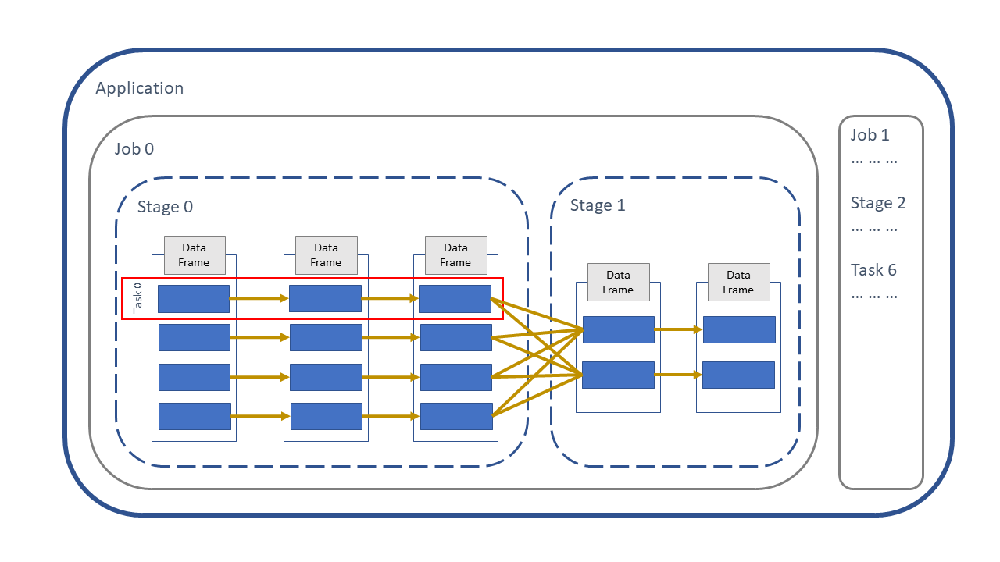
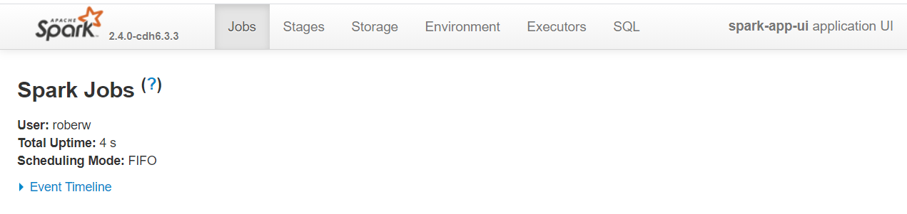
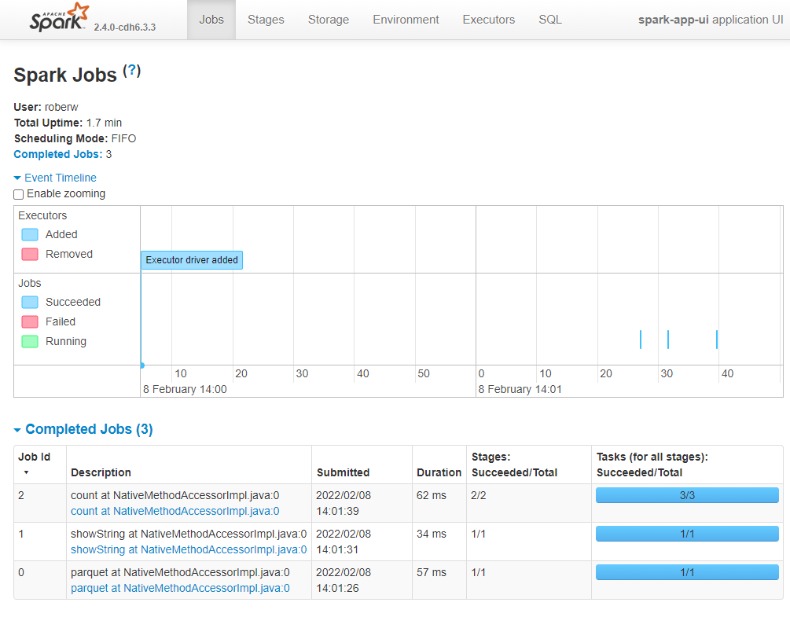
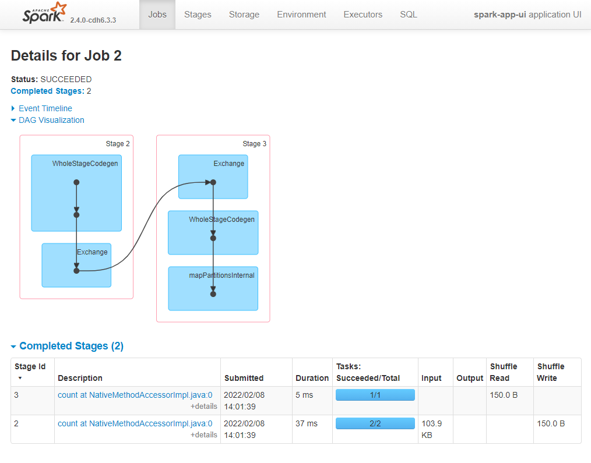
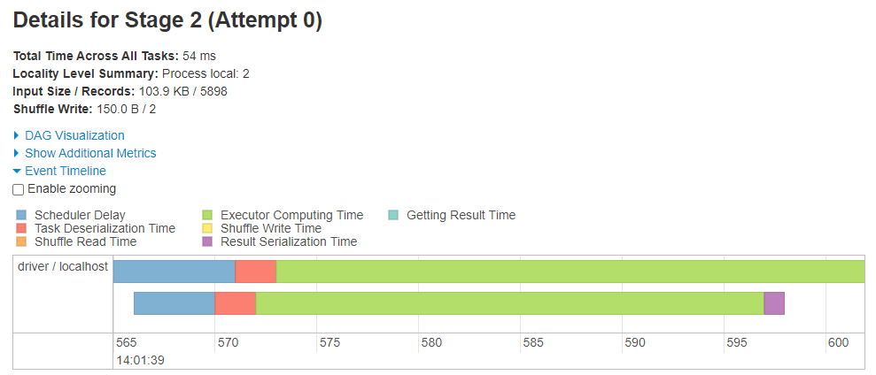
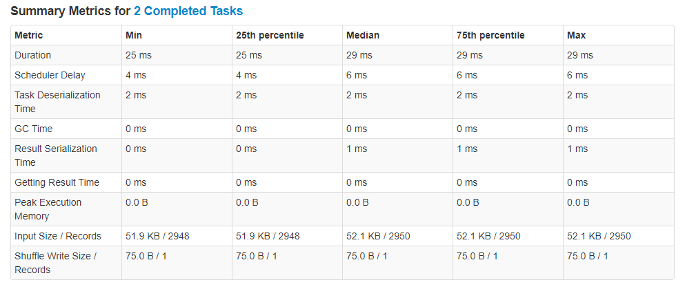
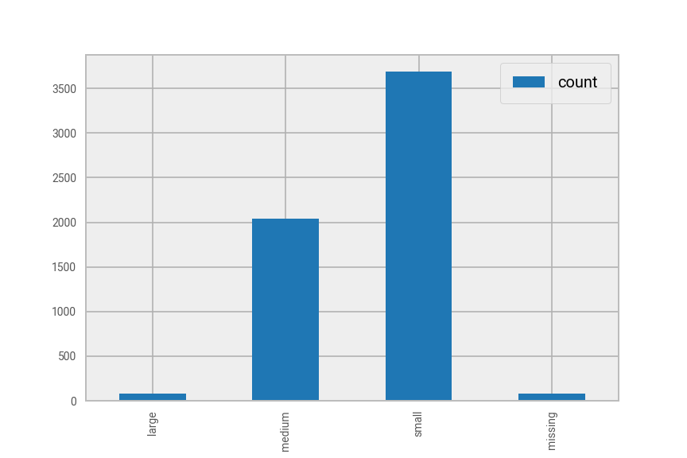
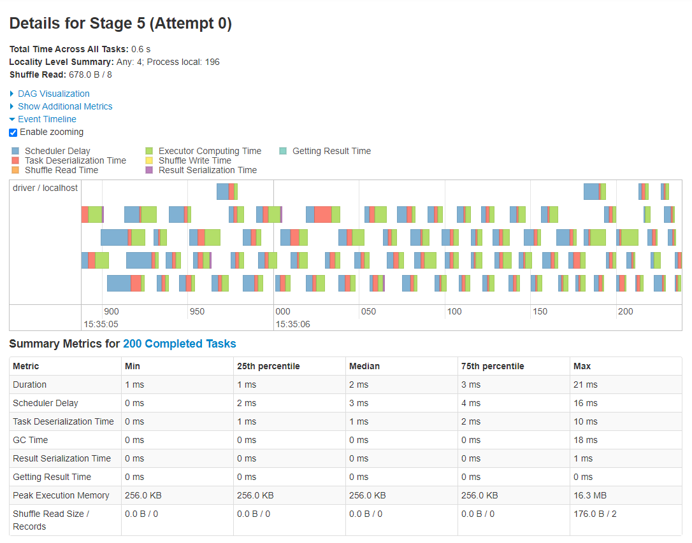
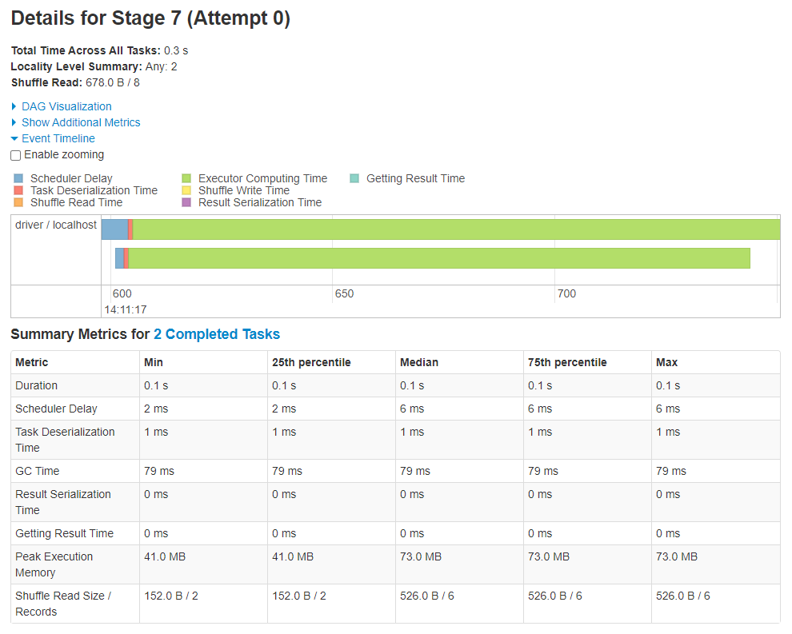

Spark Application and UI
Contents
Spark Application and UI¶
This article introduces the structure of a Spark application and how the structure relates to the various pages within the application monitoring interface, the Spark UI.
The Spark UI is used to monitor the status and resource consumption of your Spark cluster and is the main tool for troubleshooting slow Spark code.
Understanding the structure of a Spark application helps to understand how Spark works so you can begin to think differently as you code to get the most out of Spark.
Spark Application Overview¶
A Spark application has an underlining structure and learning about this structure will help us:
understand the difference between a narrow transformation, wide transformation and an action
navigate around the Spark UI
Below is a diagram of the Spark application hierarchy:
Application - a set of jobs managed by a single driver, e.g. on a Cloudera platform that is the CDSW session. An application is created when we connect to Spark with a
SparkSessionin PySpark orspark_connect()in sparklyr.Job - a set of stages executed as a result of an action, e.g.
.count()/sdf_nrow(). A job might consist of a number of transformations, but a job always finishes with an action.Stage - a set of tasks that can be executed in parallel. Similar to how actions define a job boundary, a stage boundary is introduced by a wide transformation, such as
.groupby()/group_by()or.join()/left_join(). A stage might consist of many narrow transformations, but a stage always finishes with a wide transformation or action.Task - an individual unit of work assigned to a single core on an executor.

Note that Jobs, Stages and Tasks are numbered starting from zero.
Now look more closely at the DataFrame. On the left there is a Spark DataFrame which is split up into four sections, called partitions. Spark puts our data into partitions automatically so we don’t have to decide how or when to do it. More details on exactly how Spark does this are in the Partitions Article.
The first operation to be applied to this DataFrame is a narrow transformation, e.g. adding two columns to create a new column. The second operation is again a narrow transformation. These two operations can be run in parallel, because each child partition has only one parent, indicated by the golden arrows.
Then we hit a stage boundary, which means the third operation is a wide transformation, e.g. aggregating the data or joining with another DataFrame. This is a wide operation because each child partition has multiple parent partitions. This is also an example of shuffling the data, which means to move data between partitions, more on shuffling in the Shuffling Article.
Finally in the diagram above there is another narrow operation on the aggregated DataFrame before we run into an action, e.g. writing the data to HDFS or a simple count of the rows.
As we execute the wide and narrow transformations nothing happens to the data at this point in time, Spark just builds up a plan of what to do with the DataFrame. This plan is a called the execution plan and is a set of instructions of how to transform the data from one state to another. More on the execution plan in the Persisting Article. An action initiates the execution plan and so this is when the DataFrame is processed. All the previous transformations, along with the action, are put into Spark jobs and deployed on the Spark cluster.
Investigate the Spark UI¶
We will create an application and execute some code to create jobs. Then we can drill down from Job to Stage to Task and investigate their performance. In most cases this is where we look first when trying to diagnose a slow Spark application.
Create an application¶
The first step is to create an application. Once we create a Spark application we can look at the Spark UI. If we stop the Spark session using spark.stop()/spark_disconnect() or disconnect from the notebook, the Spark UI for our application can no longer be accessed.
Let’s start with the necessary imports and create an application.
import os, IPython
import yaml
from pyspark.sql import SparkSession, functions as F
spark = SparkSession.builder.master("local[2]").appName("spark-app-ui").getOrCreate()
library(sparklyr)
default_config <- sparklyr::spark_config()
sc <- sparklyr::spark_connect(
master = "local[2]",
app_name = "spark-app-ui",
config = default_config)
We can then look at the Spark UI using the URL http://localhost:4040/jobs/. Note this address is used for a local Spark session, for more information on how to navigate to the Spark UI see the documentation on monitoring.
If you are running the source notebook and follow the above link you will see something similar to the screenshot below, with the application name on the top right and various tabs along the top.
There is a lot of useful information in the Spark UI, but in this article we will only concentrate on the Jobs and Stages tabs. Note that we haven’t executed any Jobs yet, so there isn’t much to see at the moment.

Let’s import the animal rescue data and find out the number of partitions in which our rescue DataFrame is processed. The number of partitions will be useful later when we’re investigating our application’s tasks.
with open("../../../config.yaml") as f:
config = yaml.safe_load(f)
rescue_path = config["rescue_path"]
rescue = spark.read.parquet(rescue_path)
print("Number of partitions: ",rescue.rdd.getNumPartitions())
config <- yaml::yaml.load_file("ons-spark/config.yaml")
rescue <- sparklyr::spark_read_parquet(sc, config$rescue_path)
print(paste0("Number of partitions: ", sparklyr::sdf_num_partitions(rescue)))
Number of partitions: 2
Next we’ll carry out some basic processes to see how this translates into jobs, stages and tasks in the Spark UI. We will group the incident costs by creating a new column called cost_group containing three groups small, medium and large.
rescue = (
rescue.withColumn("cost_group",
F.when(F.col("total_cost")<300, "small")
.when((F.col("total_cost")>=300) & (F.col("total_cost")<900), "medium")
.when(F.col("total_cost")>=1000, "large")
.otherwise(None)
)
)
rescue.select("animal_group", "description", "total_cost", "cost_group").show(7, truncate=80)
rescue <- rescue %>% sparklyr::mutate(
cost_group=dplyr::case_when(total_cost<300 ~ "small",
total_cost>=300 & total_cost<900 ~ "medium",
total_cost>=900 ~ "large",
TRUE ~ NULL)
)
rescue %>%
sparklyr::select("animal_group", "description", "total_cost", "cost_group") %>%
head(7) %>%
sparklyr::collect()
+------------+----------------------------------------------------------------+----------+----------+
|animal_group| description|total_cost|cost_group|
+------------+----------------------------------------------------------------+----------+----------+
| Cat| CAT TRAPPED IN BASEMENT| 290.0| small|
| Horse| HORSE TRAPPED IN GATE| 590.0| medium|
| Bird|PIGEON WITH WING IMAPLED ON SHARP IMPLEMENT UNDER A BRIDGE NEAR| 326.0| medium|
| Cat| ASSIST RSPCA WITH CAT STUCK ON CHIMNEY| 295.0| small|
| Dog| DOG FALLEN INTO THE CANAL| 260.0| small|
| Deer| DEER STUCK IN RAILINGS| 520.0| medium|
| Deer| DEER TRAPPED IN FENCE| 260.0| small|
+------------+----------------------------------------------------------------+----------+----------+
only showing top 7 rows
To produce the above output Spark didn’t need to process all of the partitions, there are enough rows on one partition to create the output so Spark only processed one partition. If we want Spark to process all of the partitions we need to call an action that involves all rows of the DataFrame, such as getting the row count.
rescue.count()
rescue %>% sparklyr::sdf_nrow()
5898
Jobs page¶
Now that we’ve created some jobs let’s have a quick look at the application’s Event timeline. For those who are running this as a notebook:
Go into the Spark UI
Make sure you’re on the Jobs tab
Open the Event timeline collapsable section using the blue arrow to see something similar to the below image.
Note the images in this article were created using PySpark, the Spark UI will look slightly different when using sparklyr, but not very different.
In the top section of the timeline you will see the executors being added and removed by the dynamic allocation feature of Spark. The SparkSession used in this case was a local session, so we will only see the driver here. The jobs are shown in the bottom section of the timeline. Hover over a job in the timeline and the corresponding job in the Completed Jobs table below will be highlighted.
Tip: You can tick the Enable Zooming button to zoom in and out of different sections of the timeline

Let’s look at the Completed Jobs table. The description gives us a clue as to the action that initiated that job. The first job, Job Id 0, was to interact with HDFS, so it has the description parquet at NativeMethodAccessorImpl.java:0. Remember that executing transformations creates an execution plan, so Spark needs to know the DataFrame’s schema, i.e. column names and types, to validate our PySpark/sparklyr code. Reading from disk will always create a job, usually consisting of just one stage as shown in the Stages column.
The second job was initiated by .show()/collect(), again it consists of one stage, which itself had one task as shown in the Tasks column. As mentioned in the previous section, Spark only needed to process one partition to produce the output so we therefore have one task in this job.
The third job was the .count()/sdf_nrow(). The job contains two stages, which themselves consist of 3 tasks. Let’s get more information on these stages and tasks. Within the Completed Jobs table click on the link in the Description column for the latest job that says count at NativeMethodAccessorImpl.java:0.
Now we are on the Job Details page which show information about the job’s stages. The first stage had two tasks, one task to count the rows in each partition. The second stage had one task, which was to send the result to the driver for us to see. On this page you will see another type of diagram called a Directed Acyclic Graph or DAG, by opening the DAG Vizualisation collapsable section.
The DAG shows the two stages. Here are some rough definitions of the terms inside the boxes
WholeStageCodegen- this is Spark creating an optimised version of our code
Exchange - another word for shuffling data, i.e. data is being moved between partitions
mapPartitionsInternal - bringing information from multiple partitions together
There are more informative DAG diagrams on the SQL tab, which are explored in the Joins Article and Persisiting Article.

Stages page¶
From the Completed Stages table on the Job Details page, when we click on the link in the Description column for the stage consisting of two tasks (Stage Id 2 in the example above), we get to the Stage Details.
This page contains lots of detailed information about the individual tasks and it’s one of the more useful places to look for troubleshooting sluggish applications. We will just concentrate on two sections within this page, the Event timeline (for tasks) and the Summary Metrics.
Task Event timeline¶
Opening the Event timeline collapseable menu will show a timeline like in the below image. This timeline has a single row, which means one executor (i.e. the driver in our case because we’re running a local session) was used to complete these tasks. This executor has two cores, we know this because the Executor Computing Time (shown in green) of the two task are overlapping. If there was just one core available to the driver the two tasks would not run in parallel.

The colours also indicate what was going on while the task was being completed. In general- green is good, and is an indication that there is no need to spend time optimising the processing. Delays often occur when lots of data are moved around, because the process can involve some or all of the below:
serialising data - preparing the data to be moved to disk
shuffle write - writing data to disk to be read by a shuffle somewhere else
shuffle read - reading a shuffle from disk onto an executor or driver
deserialisation - preparing the data to be read in memory
Sometimes when processing many small partitions more time is spent on moving small amounts of data around than useful processing time. This task event timeline will show evidence of this problem in the form of non-green colours. We’ll see this in action later.
Summary Metrics¶
Summary information about the tasks within a stage are given in the Summary Metrics table. Select the (De)select All option to view more metrics.
This is a useful indication of the distribution of times taken for various components of task processing. It might not be the most useful part of the UI to look at with only two tasks, so we will revisit this later.

We won’t discuss GC time, or garbage collection time, in this article. This is a topic that is covered in a separate article.
More information¶
Documentation¶
There are tens of blogs available online that introduce some feature in the Spark UI, but most are not particularly useful and are generally rehashes of other blogs.
Finally, since its release of version 3.0.0, Spark’s online documentation contains information about the Spark web UI. Note however that this is a later version of Spark than what is currently used in DAP at the ONS. Therefore there will be some small differences between what you see in your application’s UI and that documented in the above link.
The documentation runs through the different pages of the Spark UI with screenshots and a brief description of the various elements. It’s a good place to start and useful for finding definitions. For example, if you want to know what Scheduler delay means, search for this term on the docs page and you will find
Scheduler delay is the time the task waits to be scheduled for execution
Moving data outside Spark¶
Note that in our case using the Data Access Platform (DAP) we could call the driver here CDSW session, but we’ll use driver to be consistent with other material in this book.
What can the Spark UI tell us about the processing of Pandas/R DataFrames? Let’s investigate by
aggregate the
rescueDataFrameuse
.toPandas()/collect()to move the data to the drivermake a plot of the aggregated data
check the Spark UI
First step is to aggregate the data, we’ll find the count of incidents in each cost_group. We will distinguish between the Spark and Pandas/R DataFrames using _spark or _pandas/_r as suffixes respectively.
aggregated_spark = rescue.groupBy("cost_group").agg(F.count("incident_number").alias("count"))
aggregated_pandas = aggregated_spark.toPandas()
aggregated_pandas
aggregated_spark <- rescue %>%
dplyr::group_by(cost_group) %>%
dplyr::summarise(count=n())
aggregated_r <- aggregated_spark %>% sparklyr::collect()
aggregated_r
cost_group count
0 None 82
1 medium 2045
2 small 3691
3 large 80
aggregated_pandas_plot = (
aggregated_pandas.fillna("missing")
.set_index("cost_group")
.loc[["large", "medium", "small", "missing"]]
)
aggregated_pandas_plot.plot(kind="bar")
aggregated_r_plot <- aggregated_r %>% dplyr::arrange(desc(cost_group))
ggplot2::ggplot(aggregated_r_plot, ggplot2::aes(cost_group, count)) +
ggplot2::geom_bar(stat="identity")

Now we have our chart, let’s see how that translates to tasks in the Spark UI.
There is a job for .toPandas()/collect(), but nothing after that for the plot. Why?
The plotting was done in Pandas/R and so Spark was not involved at all. We therefore don’t expect the Spark UI to show anything that represents those processes.
Improving performance¶
Finally, let’s take a look at the stages and tasks for the latest job in the Spark UI and have and see an example of identifying a performance issue, how to solving it, and finding evidence of improvement.
The .toPandas()/collect() job has two stages because the .groupBy().agg()/group_by()%>%summarise() command is a wide transformation. In the first stage the data is read in, a new column added and then the dataset is aggregated. This stage has 2 tasks because the rescue DataFrame has 2 partitions. The second stage in this job moves the data from the cluster to the CDSW session. This stage has 200 tasks, because aggregated_spark has 200 partitions, more on why this is the case in the Partitions article. A screenshot of the Stage details for these tasks is below.

As we’re running in local mode with 2 cores (or threads), the processing of these 200 tasks took place on the driver. The tasks seem to show relatively poor performance, which is indicated by the non-green colours in the timeline. Also by comparing the Duration (useful processing time) metrics with that of Scheduler Delay and Task Deserialization Time in the Summary Metrics table. Would we get better performance if the aggregated_spark DataFrame had fewer partitions? Let’s try to improve the performace by reducing the number of partitions from 200 to 2.
aggregated_spark = rescue.groupBy("cost_group").agg(F.count("incident_number").alias("count")).coalesce(2)
aggregated_pandas = aggregated_spark.toPandas()
aggregated_spark <- rescue %>%
dplyr::group_by(cost_group) %>%
dplyr::summarise(count=n()) %>%
sparklyr::sdf_coalesce(2)
aggregated_r <- aggregated_spark %>%
sparklyr::collect()
Now navigate to the details of the latter stage of the latest job within the UI and you will see something similar to the screenshot below. Of course, the all important metric to compare is the time taken to complete the stage. Previously, using 200 partitions the stage time was 0.6 seconds, using 2 partitions the stage time was 0.3 seconds. Looking at this page we can see why.

Note that a 0.3s improvement is nothing to brag about, but a x2 processing speed isn’t bad.
Again, the processing took place on the driver with 2 cores, but this time there was one task per core. There’s much more green visible in this timeline and comparing Scheduler Delay and Task Deserialization Time with Duration in the Summary Metrics tells a very different story.
The important point is that we are processing a small amount of data and therefore should reduce the partitioning. With 200 partitions a lot of time was spent scheduling tasks and (de)serializing data. By putting our small DataFrame into fewer partitions we spent more time on useful processing and decreased the overall processing time.
Summary¶
Spark application hierarchy
- Application
- Job
- Stage
- Task
Use the Spark UI to
debug slow or crashing applications
investigate what Spark is doing “under the hood”
Tips
Look out for task colours, green is generally good
Use online documentation for more information about the UI
Lots of small partitions is an inefficient strategy to process data
Matching up the executed code with the job number in the UI is difficult, the description starts with the action used to initiate that job. You can also customise the job description to track jobs easier. See Job Decription tip for more information.
Further Resources¶
Spark at the ONS:
Partitions
Shuffling
Persisting
Joins
Garbage Collection
Job description
Spark documentation:
PySpark documentation:
sparklyr documentation: